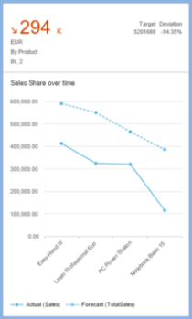

Configuring Charts
Developers configure the measures and dimensions displayed in charts by setting the role property to the desired value per chart type. Additional definitions apply to all chart types.
You can use the same annotation file with different qualifiers to present charts with different chart views. You do this by specifying different qualifiers in the annotation file for each card. The following sections of the annotation file apply to all chart types:
| Annotation |
What it Does |
|---|---|
| UI.Identification | Specify the navigation targets activated when the user clicks the card and list the parameters to pass to the target application. This definition is mandatory. For more information, see Configuring Card Navigation. |
| UI.SelectionVariant.SelectOptions | Specify the filter values that are applied to the card, which are applied when retrieving the card data. |
| UI.PresentationVariant.SortOrder | Specify the sort order to be used. |
| UI.PresentationVariant.MaxItems | Limit the maximum number of records to be fetched from the
backend. If this variant isn't used, then all records from the
backend will be displayed in the chart.
|
| UI.Chart | Specify the dimensions and measures that make up the chart, the chart type, and the way that the measures/dimensions are used for the chart. This definition is mandatory. |
| UI.Chart.MeasureAttributes.Measure | Defines the measures used in the chart. |
| UI.Chart.MeasureAttributes.Role | The manner in which a measure is used within the chart. This is configured differently for each chart type, as described below. |
| UI.Chart.DimensionAttributes.Dimension | These are the dimensions used in the chart. |
| UI.Chart.DimensionAttributes.Role | The manner in which a dimension is used within the chart. This is configured differently for each chart type, as described below. |
Formatting Numeric Values in Charts
Within overview pages, analytical chart cards can have format measure values based on the NumberOfFractionalDigits and ScaleFactor properties of the DataPoint term in the annotation file.
Semantic Pattern
- Datapoint annotation should contain the ForecastValue property with value as a measure.
- Chart annotation should consist of:
- 1 dimension and 1 measure for line and column chart cards
- 1 dimension and 1-2 measures for vertical bullet chart cards

Chart Types
Overview pages can use line, donut, bubble, column, stacked column, vertical bullet, combination, and scatter analytic chart cards.
The value assigned to the role property for dimensions and measures in the annotation file determines the visualization of the chart. For dimensions, you can set the role to category or series. If no value is specified, the default is category.
For measures, you can set the role to the values: axis1, axis2 , or axis3. If no value is specified, the default is axis1. The actual interpretation of the role value specified in the annotation file varies according to the chart type used.
Time Series Charts
Time series chart cards are cards with regular charts, but use time as the category axis instead of the categorical axis. The advantage in using a time-series axis is that the representation of the time-based dimension is much cleaner and more responsive to the change in card size. The display level and format in the time axis would be offered in the default format by the visual chart (for example day/month/year displayed as 10/Jan/2016).
Analytic cards will automatically use the time axis only if the following conditions are met:
- The chart type is either line, bubble, column, or combination
- The chart is configured with only one dimension
- The data type of the dimension is either edm.datetime or edm.string. If the data type is edm.string, then it must have the additional OData metadata annotation sap:semantics of yearmonthday. If it's a bubble chart, there must be exactly two measures
- If it's a combination chart card, then there must be at least two measures.
Color Palette
-
First object: criticality state 0
-
Second object: criticality state 1
-
Third object: criticality state 2
-
Fourth object: criticality state 3
More Information
For more information about the type of charts used in overview pages, see Chart Cards Used in Overview Pages.